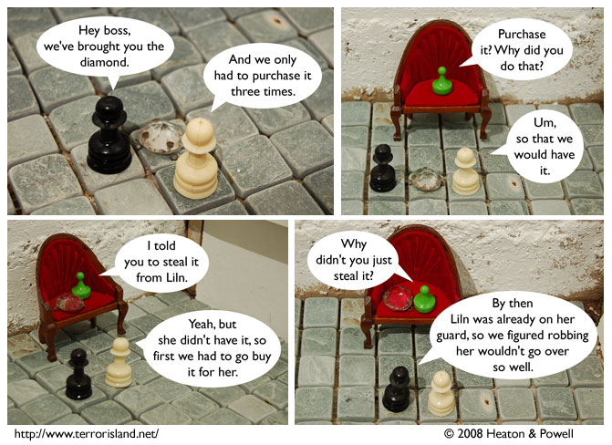

Strip #327
— Monday, July 14, 2008
Oh, those wacky chess pieces!
Notes, Thoughts, &c.
Ben’s Notes
Just a reminder: next week we’re going to be in San Diego for the Comic-Con. We won’t have a booth or merchandise, but if you happen to see me walking around and want to pay five bucks for a sketch, I’d be up for that.
Lewis’s Notes
This has been on my mind a lot lately, so I’m just going to come right out and say it: I don’t think operas count as real musicals.
I wrote Lewis’s comments today. -Ben